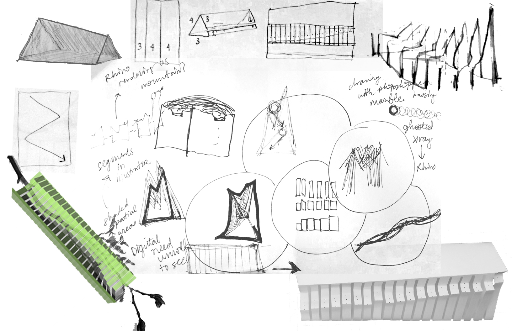

Spring Design Studio
Marble Mover
This project relied strictly on the materiality of 11x17" paper to create
a structure on or through which a marble could travel. I used the curve of
a scanned tree branch to create a path that the marble was intended to move along.
Working extensively with different types of oragami and kirigami enabled me to think
about symmetry, rhythm, direction of a marble's movement and speed dependent on gravity,
limits, and testing my iterations.
Three images show my concept, my process work, and a hybrid image using both an analog draft and digital media.
